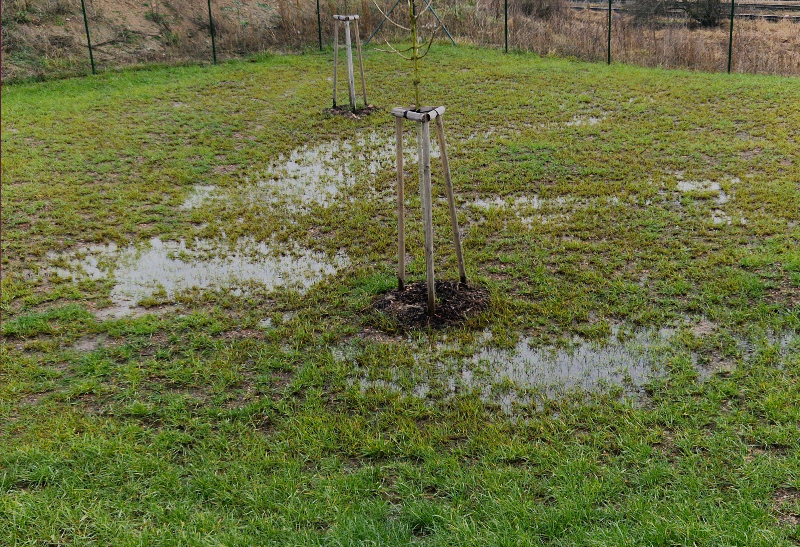
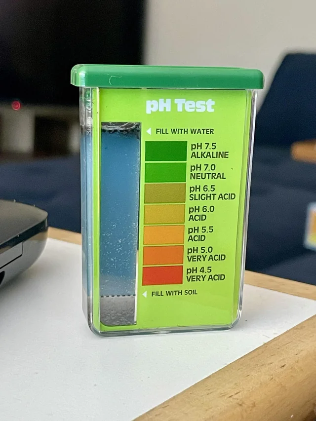
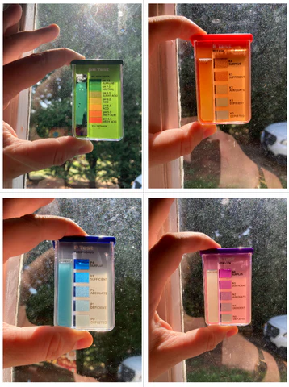
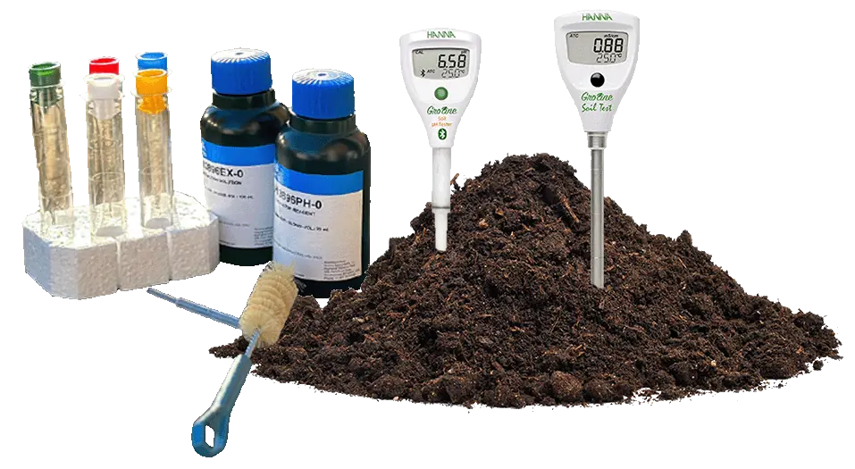
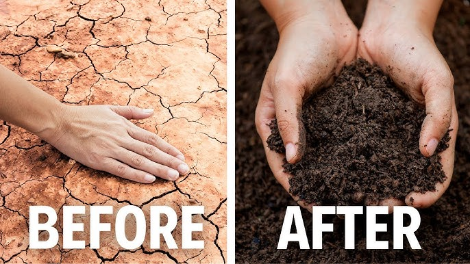
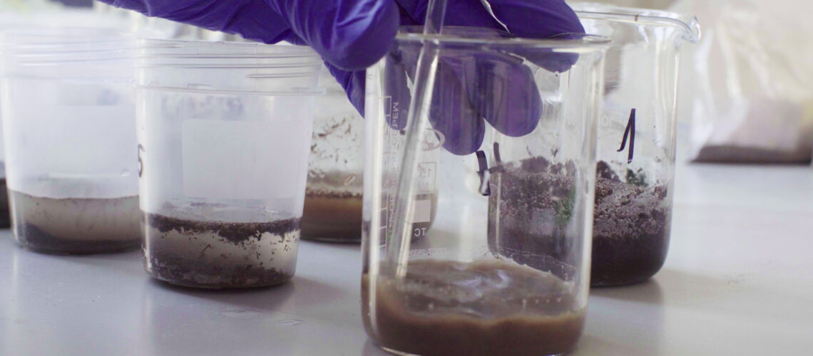
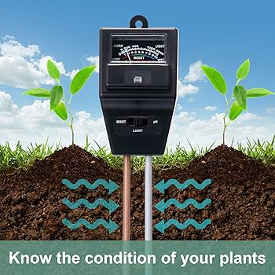
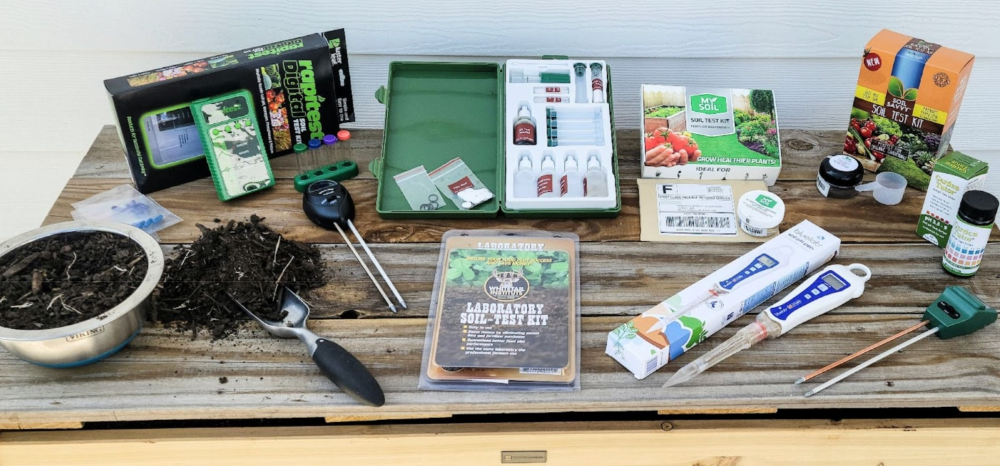

Guide to Professional Soil Analysis: From Sampling to Mastery
Page 1 of 30
Mastering the Ground Beneath Our Feet: A Comprehensive Guide to Soil Composition Analysis
Introduction
Soil is not just dirt; it is a dynamic, living ecosystem that forms the foundation for terrestrial life. Understanding its composition is a fundamental skill in agriculture, environmental science, geology, engineering, and ecology. This guide is designed to transform a curious student into a competent practitioner. We will move beyond simple formulas and delve into the "why" and "how" of soil analysis, equipping you with the knowledge to collect reliable data, interpret results like a professional, and understand the profound implications of your findings.
Learning Objectives:
By the end of this guide, you will be able to:
- Understand the physical, chemical, and biological components of soil.
- Design and execute a scientifically sound soil sampling strategy.
- Perform a detailed particle size analysis using the hydrometer method.
- Determine soil organic matter content using the Loss-on-Ignition method.
- Classify soil texture using the USDA soil texture triangle.
- Interpret soil composition data to make informed recommendations for land use.
Chapter 1: Why Soil Composition Matters
Before we learn how to analyze soil, we must understand why it's so critical.
1.1 The Foundation of Plant Growth
- Physical Support: Soil structure, derived from its composition, provides anchorage for plant roots.
- Water Management: The balance between sand, silt, and clay determines a soil's water-holding capacity and drainage. Sandy soils drain too quickly, while clayey soils can become waterlogged.
- Nutrient Reservoir: Clay particles and organic matter have negative charges that hold onto essential plant nutrients (cations like K+, Ca2+, Mg2+), preventing them from leaching away and making them available to plants.
- Aeration: The pore spaces between soil particles contain oxygen, which is vital for root respiration.
1.2 Environmental and Engineering Applications
- Carbon Sequestration: Soils are the largest terrestrial carbon sink. Organic matter content is directly linked to a soil's ability to mitigate climate change.
- Water Filtration: Soil acts as a natural filter, purifying water as it percolates down to aquifers.
- Waste Decomposition: Soil microorganisms break down organic pollutants and waste materials.
- Construction: The engineering properties of soil (shear strength, compressibility) are dictated by its texture and composition, critical for building stable foundations.
Page 2 of 30
Chapter 2: The Constituents of Soil - A Deeper Dive
Soil is a complex, three-phase system: Solid, Liquid, and Gas.
2.1 The Solid Phase
This is what we typically mean by "soil composition." It consists of mineral particles and organic matter.
- Mineral Particles: Derived from the weathering of parent rock.
- Sand (0.05 mm - 2.0 mm): The largest particles. Feel gritty. Create large pores for good drainage and aeration but hold few nutrients.
- Silt (0.002 mm - 0.05 mm): Intermediate particles. Feel smooth and floury. Have a higher surface area than sand, holding more water and nutrients.
- Clay (< 0.002 mm): The smallest particles. Feel sticky when wet. Have a massive surface area and negative charges, making them the primary source of soil fertility and plasticity.
- Organic Matter (OM): Composed of living organisms, fresh residues, and well-decomposed organic material (humus). Humus is exceptionally good at holding water and nutrients and is key to forming stable soil aggregates.
2.2 The Pore Space
The spaces between solid particles are filled with:
- Soil Solution (Liquid): Water containing dissolved salts, gases, and organic compounds. This is the "blood" of the soil, transporting nutrients to roots.
- Soil Atmosphere (Gas): Contains gases like O2, CO2, and N2. Root and microbial respiration deplete O2 and increase CO2.
Page 3 of 30
Chapter 3: Step 1 - The Art and Science of Soil Sampling
A soil analysis is only as good as the sample it comes from. An unrepresentative sample leads to misleading results and poor decisions.
3.1 Defining Your Objective
The purpose of your sampling dictates the strategy.
- General Field Assessment: To determine average nutrient and texture status across a large area.
- Problem Diagnosis: To investigate a specific issue like poor drainage or stunted growth in a specific zone.
- Research Plot Sampling: For high-precision scientific experiments.
3.2 Tools of the Trade
- Soil Probe or Auger: The ideal tool for taking consistent, deep samples.
- Clean Bucket: Made of plastic, for compositing samples.
- Sample Bags or Boxes: Clean, paper or plastic.
- Permanent Marker, GPS/GPS App, Data Sheet.
Page 4 of 30
3.3 Sampling Strategies
- Random Sampling: Suitable for uniform areas. Walk in a "W" or "Z" pattern, taking 15-20 sub-samples from random spots.
- Grid Sampling: Used for precision agriculture. The area is divided into a grid (e.g., 1-acre cells), and a composite sample is taken from the center of each grid.
- Zone Sampling: Based on obvious differences in soil type, topography, or past crop performance.
Procedure for a Representative Composite Sample:
- Clear the surface: Remove plant litter from the sampling point.
- Insert the probe: Insert it vertically to the desired depth (e.g., 0-15 cm for lawns, 0-30 cm for most crops).
- Take a core: Extract a uniform core of soil.
- Composite: Place the core into your clean bucket.
- Repeat: Take 15-20 sub-samples from across the entire area.
- Mix thoroughly: Break up clumps and mix all sub-samples in the bucket. This creates one "composite sample" that represents the entire area.
- Sub-sample: From this mixed composite, take about 500g (1 lb) of soil and place it into your sample bag/box. This is the sample you send to the lab or analyze.
- Label clearly: Label the bag with a unique Sample ID, Date, Location, Depth, and your name.
Page 5 of 30
Chapter 4: Step 2 - Determining Soil Texture by Particle Size Analysis
This chapter provides a detailed, professional-level procedure for the Hydrometer Method, the standard lab technique for determining sand, silt, and clay percentages.
4.1 Principle of the Hydrometer Method
This method is based on Stokes' Law, which describes the settling velocity of a spherical particle in a fluid. In simple terms, larger particles (sand) settle out of a water suspension quickly, while smaller particles (silt and clay) settle very slowly. A hydrometer is used to measure the density of the soil-water suspension at specific time intervals. The density decreases over time as particles settle. The density reading at a given time corresponds to the amount of particles still in suspension.
Stokes' Law Formula:
v = (2/9) * (g * (ρ_p - ρ_f) / η) * r²
Where:
· v = settling velocity (cm/s)
· g = acceleration due to gravity (cm/s²)
· ρ_p = density of the particle (g/cm³)
· ρ_f = density of the fluid (g/cm³)
· η = viscosity of the fluid (g/(cm·s))
· r = radius of the particle (cm)
We use this to calculate the effective particle diameter still in suspension at any given time.
Page 6 of 30
4.2 Equipment and Reagents Needed
- Soil sample (air-dried and pulverized)
- Standard soil hydrometer (Bouyoucos hydrometer, calibrated at 68°F/20°C)
- Sedimentation cylinders (1000 mL)
- Sieve with 2-mm (No. 10) openings
- Sieve with 0.05-mm (No. 270) openings
- High-speed mechanical stirrer or plunger
- Balance sensitive to 0.01 g
- Dispensing cylinder
- Sodium Hexametaphosphate (50 g/L solution) - a dispersing agent that breaks down soil aggregates into primary particles.
- Thermometer
- Stopwatch
Page 7 of 30
4.3 Detailed Hydrometer Method Procedure: Part 1 - Sample Preparation
- Preparation: Air-dry your composite soil sample. Gently crush it with a rolling pin to break up aggregates, but do not grind the sand particles. Pass the soil through a 2-mm sieve. The material that passes through is your "fine earth" fraction, which we will analyze.
- Weighing: Accurately weigh 50.0 g of this prepared soil. Record this as your oven-dry weight (W_total). Note: If your soil is high in organic matter or carbonates, special pretreatments are needed, but we assume a "normal" mineral soil for this guide.
- Dispersion: Transfer the 50g soil into a dispersion cup. Add 100 mL of the sodium hexametaphosphate solution and 100 mL of distilled water.
- Mixing: Stir vigorously with a mechanical stirrer for 5-10 minutes. This ensures all aggregates are broken down and each particle is separate.
Page 8 of 30
4.4 Detailed Hydrometer Method Procedure: Part 2 - The Sedimentation Run
- Transfer: Quantitatively transfer the entire dispersed mixture into a 1000 mL sedimentation cylinder. Rinse the cup into the cylinder. Add distilled water to the 1000 mL mark.
- Initial Mixing: Place a rubber stopper over the top and invert the cylinder vigorously for one minute to ensure a uniform suspension. This is time t=0.
- First Reading (40 Seconds): Immediately after inverting, place the cylinder on a level bench. At exactly 40 seconds after you stop inverting, carefully lower the hydrometer into the suspension and take a reading at the top of the meniscus. Record this as the R1 reading.
- Professional Tip: The 40-second reading corresponds to the density of the suspension with all silt and clay still in suspension. The sand particles (>.05 mm) have settled below the hydrometer's bulb.
- Temperature: Record the temperature of the suspension.
- Second Reading (2 Hours): Leave the cylinder undisturbed. At exactly 2 hours (or sometimes 4-7 hours for more accuracy), take a second hydrometer reading. Record this as R2.
- Professional Tip: The 2-hour reading corresponds to the density of the suspension with only clay still in suspension. The silt particles (>.002 mm) have settled out.
Page 9 of 30
4.5 Calculations and Corrections
Raw hydrometer readings must be corrected for the meniscus and temperature. A composite correction factor is often determined using a blank cylinder with only water and dispersing agent.
Corrected Hydrometer Reading:
Corrected R = Actual R + Meniscus Correction - Composite Correction
However, for a student lab, we can use standard correction tables.
Calculating Percentages:
- % Clay: This is the simplest calculation. The 2-hour reading (R2) represents the grams of clay still in suspension.
% Clay = (Corrected R2 / W_total) * 100
- % Silt + Clay: The 40-second reading (R1) represents the grams of silt AND clay in suspension.
% Silt + Clay = (Corrected R1 / W_total) * 100
- % Silt:
% Silt = [(% Silt + Clay) - (% Clay)]
- % Sand:
% Sand = 100 - (% Silt + Clay)
Your final report should show: Sand = X%, Silt = Y%, Clay = Z%.
Page 10 of 30
4.6 The Sieve Analysis (For Coarse Soils)
The hydrometer method is best for fine-grained soils. For very sandy or gravelly soils, a sieve analysis is more appropriate.
Procedure:
- Weigh a dry soil sample.
- Pass it through a stack of sieves with progressively smaller mesh sizes (e.g., 2mm, 1mm, 0.5mm, 0.25mm, 0.1mm, 0.05mm).
- Shake the stack for a standardized amount of time.
- Weigh the soil retained on each sieve.
- Calculate the percentage retained on each sieve and the cumulative percentage passing through.
This provides a detailed particle size distribution curve, essential for engineering classifications.
Page 11 of 30
Chapter 5: The Soil Texture Triangle
Now that you have your sand, silt, and clay percentages, it's time to classify your soil.
5.1 Understanding the Triangle
The USDA Soil Texture Triangle is a ternary diagram. Each side represents the percentage of one of the three components. The sum of the three percentages at any point is 100%.
- The bottom side is % Sand.
- The right side is % Silt.
- The left side is % Clay.
5.2 How to Use the Triangle
- Locate your % Clay on the left axis. Follow the line parallel to the base of the triangle (the sand axis) from that point.
- Locate your % Silt on the right axis. Follow the line parallel to the left side of the triangle (the clay axis) from that point.
- Locate your % Sand on the bottom axis. Follow the line parallel to the right side of the triangle (the silt axis) from that point.
- The point where these three lines intersect defines your textural class.
Page 12 of 30
Visual Guide: The USDA Soil Texture Triangle
(A detailed, labeled diagram of the USDA Soil Texture Triangle would be inserted here.)
Example:
You have a soil with:
- Sand: 40%
- Silt: 40%
- Clay: 20%
- Find 20% on the clay axis. Move right, parallel to the sand base.
- Find 40% on the silt axis. Move down and left, parallel to the clay axis.
- Find 40% on the sand axis. Move up and left, parallel to the silt axis.
- All three lines intersect in the "Loam" textural class.
Common Textural Classes:
- Loam: The ideal agricultural soil, with a balanced mix of sand, silt, and clay.
- Sandy Loam: Good drainage, easy to work.
- Clay Loam: Good nutrient and water holding, can be heavy.
- Silty Clay: Smooth, fertile, but can compact easily.
Page 13 of 30
Chapter 6: Step 4 - Determining Organic Matter Content
Organic matter (OM) is a crucial indicator of soil health. The Loss-on-Ignition (LOI) method is a common and relatively simple way to estimate it.
6.1 Principle of the LOI Method
This method measures the weight loss of a soil sample after it is heated to a high temperature (ignited) in a muffle furnace. The weight loss is primarily due to the combustion of organic matter. While it can slightly overestimate OM by also driving off water from clay minerals, it is a reliable and standard method.
6.2 Equipment Needed
- Muffle furnace (capable of reaching 600°C)
- Porcelain crucibles or ceramic boats
- Tongs and heat-resistant gloves
- Desiccator
- Balance sensitive to 0.0001 g (analytical balance)
Page 14 of 30
6.3 Detailed LOI Procedure
- Preparation: Take a sub-sample of your air-dried, 2-mm sieved soil. Dry it in an oven at 105°C for at least 2 hours to remove hygroscopic moisture. Cool in a desiccator.
- Weigh Crucibles: Weigh your clean, dry crucibles. Record this weight as W_crucible.
- Weigh Soil: Add about 5-10g of your oven-dried soil to the crucible. Weigh accurately. Record this as W_crucible + soil_dry.
- Calculate Oven-Dry Weight of Soil:
W_od = (W_crucible + soil_dry) - W_crucible
- Ignition: Place the crucibles in the cold muffle furnace. Gradually heat the furnace to 400-600°C (450°C is a common standard). Hold at this temperature for 4-6 hours. This burns off all organic matter.
- Cooling: Turn off the furnace and allow it to cool to below 150°C. Use tongs to transfer the crucibles to a desiccator to cool to room temperature. Do not place hot samples on the balance!
- Weigh After Ignition: Weigh the crucible with the ashed soil. Record this as W_crucible + soil_ash.
Page 15 of 30
6.4 LOI Calculation
% Organic Matter (LOI) = [ (W_od - W_ash) / W_od ] * 100
Where:
- W_od = Oven-dry weight of soil before ignition
- W_ash = Weight of soil after ignition ((W_crucible + soil_ash) - W_crucible)
Example:
- W_crucible = 25.000 g
- W_crucible + soil_dry = 30.000 g
- Therefore, W_od = 5.000 g
- W_crucible + soil_ash = 29.750 g
- Therefore, W_ash = 4.750 g
- % OM = [(5.000 - 4.750) / 5.000] * 100 = (0.250 / 5.000) * 100 = 5.0%
Interpretation:
- <1% OM: Very low
- 1-3% OM: Low to Medium
- 3-5% OM: Medium to Good
- 5% OM: High (typical of grasslands or forest soils)
Page 16 of 30
Chapter 7: Step 5 - Analyzing Other Critical Components
A full soil characterization goes beyond texture and OM.
7.1 Soil pH
- What it is: A measure of soil acidity or alkalinity on a scale of 1 (acid) to 14 (alkaline), with 7 being neutral.
- Why it matters: pH controls the availability of almost all plant nutrients. Most plants prefer a slightly acidic to neutral pH (6.0-7.5).
- How to measure:
- Electrometrically: Create a 1:1 or 1:2 soil-to-water slurry. Stir and let stand. Insert a calibrated pH meter electrode. This is the most accurate method.
- Indicator Test Kits: Use a chemical solution that changes color based on pH. Less precise but useful for quick field tests.
7.2 Cation Exchange Capacity (CEC)
- What it is: A measure of the soil's ability to hold and supply positively charged nutrient ions (cations like Ca2+, Mg2+, K+, Na+, H+, Al3+). It is expressed in meq/100g of soil.
- Why it matters: High CEC soils (clayey and high OM) are more fertile and resilient to pH changes. Low CEC soils (sandy) require more frequent, lighter fertilizer applications.
- How to measure: A complex lab procedure involving saturation with a cation (e.g., ammonium acetate) and then displacing and measuring that cation.
Page 17 of 30
7.3 Macronutrients (N, P, K)
- Nitrogen (N): Essential for leaf growth and green color. Measured as Nitrate-N or Total N via colorimetry or combustion analysis.
- Phosphorus (P): Vital for energy transfer and root development. Commonly measured with the Olsen P or Bray P test (colorimetric methods).
- Potassium (K): Important for water regulation and disease resistance. Measured by flame atomic absorption spectrometry or emission after extraction with ammonium acetate.
7.4 Soil Moisture Content
- What it is: The amount of water present in the soil.
- How to measure (Gravimetric):
- Weigh a fresh, moist soil sample (W_wet).
- Dry it in an oven at 105°C for 24 hours or until constant weight.
- Weigh the dry soil (W_dry).
- % Moisture = [ (W_wet - W_dry) / W_dry ] * 100
Page 18 of 30
Chapter 8: Putting It All Together - The Professional Soil Analysis Report
A professional doesn't just generate data; they synthesize it into an interpretable report.
Sample Soil Analysis Report
Lab: [Your Name/Institution]
Report Date: [Date]
Sample ID: Field_1_Composite
Client: [Your Name]
Sampling Date: [Date]
Depth: 0-15 cm
I. Physical Properties
- Sand: 45%
- Silt: 35%
- Clay: 20%
- Textural Class: Loam (as per USDA Triangle)
II. Chemical Properties
- pH (1:1 H2O): 6.5 (Slightly Acidic)
- Organic Matter (LOI): 4.2% (Good)
- CEC: 15.2 meq/100g (Medium)
Page 19 of 30
III. Macronutrients (ppm)
- Nitrate-N (NO3-N): 25 ppm (Medium)
- Phosphorus (P): 18 ppm (Low)
- Potassium (K): 120 ppm (Sufficient)
IV. Interpretation and Recommendations
Overall Assessment: This is a productive loam soil with good physical properties and a near-ideal pH. Organic matter levels are good and contribute to the medium CEC.
Recommendations:
- Phosphorus Fertilization: The low phosphorus level is the primary limitation. Apply a fertilizer with a high P content (e.g., Triple Superphosphate or a balanced N-P-K fertilizer like 10-20-10) according to local extension guidelines for the intended crop.
- Nitrogen Management: Nitrogen is at a medium level. A sidedress application of nitrogen may be needed during the peak growing season.
- Organic Matter Maintenance: Continue practices that build OM, such as adding compost or using cover crops.
Page 20 of 30
Chapter 9: Advanced Topics & The Feel Method
9.1 The Field Texture Assessment (The "Ribbon Test")
Professionals often need a quick, field-based estimate of texture. The "feel method" is a valuable skill.
Procedure:
- Moisten a small handful of soil until it is like moist putty.
- Try to form a ball. If it doesn't form, it is Sand or Loamy Sand.
- If a ball forms, try to press it between your thumb and forefinger to form a ribbon.
- No ribbon forms: Sandy Loam
- Short ribbon (<1 inch) breaks easily: Loam, Silt Loam
- Medium ribbon (1-2 inches): Clay Loam, Silty Clay Loam
- Long ribbon (>2 inches): Clay, Silty Clay
- Feel the sample for grittiness (sand), smoothness (silt), or stickiness (clay).
This method requires practice but is incredibly useful for quick field diagnoses.
Page 21 of 30
9.2 Soil Structure
Composition (texture) tells you what the building blocks are. Structure tells you how they are arranged. Structure is the aggregation of primary particles into larger units called peds.
- Types: Granular, Platy, Blocky, Prismatic, Columnar.
- Importance: Good structure (like granular) creates stable pores for water infiltration, root growth, and aeration. Poor structure (massive or platy) leads to compaction and runoff.
9.3 Soil Biology
A truly professional understanding includes the living component.
- Soil Food Web: Bacteria, fungi, protozoa, nematodes, earthworms.
- Function: Decompose OM, cycle nutrients, improve structure, suppress disease.
- Indicators: Earthworm counts, soil respiration tests, and PLFA (Phospholipid Fatty Acid) analysis in advanced labs.
Page 22 of 30
Chapter 10: Safety in the Soil Lab
Working in a lab requires strict adherence to safety protocols.
- Personal Protective Equipment (PPE): Always wear a lab coat, safety glasses, and closed-toe shoes.
- Chemical Safety: Read SDS (Safety Data Sheets) for all chemicals. Sodium Hexametaphosphate is an irritant. Avoid creating dust.
- Equipment Safety:
- Muffle Furnace: Extremely hot! Use thermal gloves and tongs. Be aware of flammable materials nearby.
- Glassware: Check for chips and cracks. Be careful when inserting hydrometers into cylinders.
- Hygiene: Wash hands thoroughly after handling soil samples and before leaving the lab.
Page 23 of 30
Chapter 11: Troubleshooting Common Problems
- Problem: Hydrometer readings are inconsistent.
- Cause: Incorrect timing, temperature fluctuations, improper mixing, or hydrometer touching the side of the cylinder.
- Problem: Soil won't disperse.
- Cause: High organic matter or carbonates. May require pre-treatment with Hydrogen Peroxide (H2O2) to remove OM.
- Problem: The three lines don't meet perfectly on the texture triangle.
- Cause: Small experimental errors are normal. Choose the textural class where the lines come closest to intersecting.
- Problem: LOI value seems too high (>10% in a mineral soil).
- Cause: Soil may contain carbonates (like calcite) which break down and release CO2 around 800-900°C. If ignited at 450°C, this is less of an issue, but for high-Ca soils, a lower temperature or a carbonate test is needed.
Page 24 of 30
Chapter 12: Case Studies
Case Study 1: The Waterlogged Garden
- Symptoms: Plants are yellowing, stunted. Soil is constantly wet and muddy.
- Analysis: Texture analysis reveals 60% Clay. The soil is a Clay. The tiny pores hold too much water and exclude oxygen.
- Solution: Incorporate large amounts of compost (to improve structure and create pores) and coarse sand/gypsum (to help flocculate clay particles). Consider building raised beds.
Case Study 2: The Droughty Farm Field
- Symptoms: Crops wilt quickly after irrigation, fertilizers seem to "leach out."
- Analysis: Texture analysis reveals 80% Sand, 10% Silt, 10% Clay. The soil is a Sand. OM is low at 0.8%.
- Solution: Focus on building organic matter with cover crops and manure to dramatically increase water and nutrient holding capacity. Use slow-release fertilizers and more frequent, light irrigations.
Page 25 of 30
Appendices
Appendix A: Data Sheet Templates
Soil Sampling Data Sheet
| Sample ID |
Date |
Location (GPS) |
Depth |
Visual Notes (color, roots, etc.) |
| Field_1_A |
10/26/23 |
42.5, -71.2 |
0-15cm |
Brown, many roots |
| ... |
... |
... |
... |
... |
Hydrometer Analysis Data Sheet
Sample ID: _________________ W_total: _______ g
| Time |
Hydrometer Reading (R) |
Temperature |
Corrected R |
| 40 sec |
|
|
|
| 2 hours |
|
|
|
Calculations: % Sand = ______ % Silt = ______ % Clay = ______ Texture: ______________
Page 26 of 30
LOI Data Sheet
| Crucible ID |
W_crucible (g) |
W_crucible+soil_dry (g) |
W_od (g) |
W_crucible+soil_ash (g) |
W_ash (g) |
% OM |
| A |
|
|
|
|
|
|
| B |
|
|
|
|
|
|
Appendix B: Glossary of Key Terms
- Aggregate: A group of soil particles that cohere to each other more strongly than to surrounding particles.
- Cation Exchange Capacity (CEC): The total capacity of a soil to hold exchangeable cations.
- Dispersing Agent: A chemical (e.g., sodium hexametaphosphate) that prevents soil particles from flocculating.
- Humus: The stable, well-decomposed part of organic matter, resistant to further breakdown.
- Hydrometer: An instrument used to measure the relative density (specific gravity) of a liquid.
- Loss-on-Ignition (LOI): A method for estimating soil organic matter content by measuring mass loss upon heating.
Page 27 of 30
Appendix B: Glossary of Key Terms (Continued)
- Parent Material: The geologic material from which soil horizons form.
- Soil Profile: A vertical section of the soil from the surface down to the parent material.
- Soil Structure: The arrangement of soil particles into aggregates.
- Soil Texture: The relative proportions of sand, silt, and clay particles in a soil.
- Stokes' Law: A law that describes the settling velocity of particles in a fluid.
Appendix C: Further Reading and Resources
- Books:
- The Nature and Properties of Soils by Nyle C. Brady & Ray R. Weil
- Soil Science Simplified by Helmut Kohnke & D.P. Franzmeier
- Online Resources:
- USDA Natural Resources Conservation Service (NRCS) Soils Website: https://www.nrcs.usda.gov/conservation-basics/natural-resource-concerns/soils
- Soil Science Society of America (SSSA): https://www.soils.org/
- Laboratory Manuals:
- Soil and Plant Analysis Laboratory Manual by A. L. Page et al.
Page 28 of 30
Conclusion: Your Journey as a Soil Professional
You have now journeyed from a simple set of instructions to a deep, practical understanding of how to analyze and interpret soil composition. You have learned not just the "how" but the "why." This knowledge empowers you to:
- Make informed decisions about land management.
- Diagnose plant and environmental problems.
- Contribute to sustainable agricultural and engineering practices.
Soil science is a field of endless discovery. Continue to practice these techniques, ask questions, and connect your findings to the real world. The ground beneath your feet holds the keys to our future, and you are now equipped to understand it.
Page 29 of 30
Index
| Term |
Page |
| Cation Exchange Capacity (CEC) |
17, 27 |
| Clay |
3, 6, 10, 12, 21 |
| Feel Method |
21 |
| Hydrometer Method |
6-10 |
| Loss-on-Ignition (LOI) |
14-16, 27 |
| Organic Matter |
3, 14-16 |
| pH |
17 |
| Safety |
23 |
| Sampling |
4-5 |
| Sand |
3, 6, 10, 12 |
| Sieve Analysis |
11 |
| Silt |
3, 6, 10, 12 |
| Soil Report |
19-20 |
| Soil Structure |
22 |
| Soil Texture Triangle |
12-13 |
| Stokes' Law |
6, 27 |
Page 30 of 32
Additional Images: Page 31

Poorly Drained Soil
This is what a poorly drained soil looks like after.

Soil PH kit
Testing of soil PH, use it.

Soil Test
Soil testing in progress.

Proper Kits
Proper Kits Image.
Page 31 of 32
Additional Images: Page 32

Treated and non-treated soil
Before and After of a bad soil after treatment.

Laboratory Test Sample
Bottled soil testing in laboratory.

Soil 3 in 1 tester
For soil moisture and light penetration and PH testing kit.

Recommended Kits
These are the recommended soil kits
Page 32 of 32